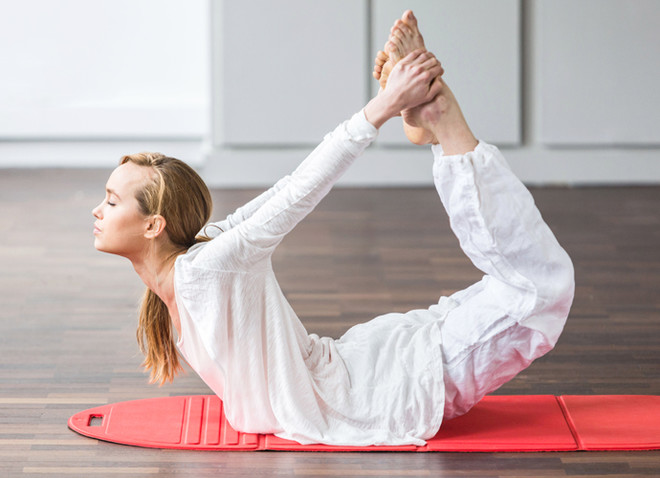
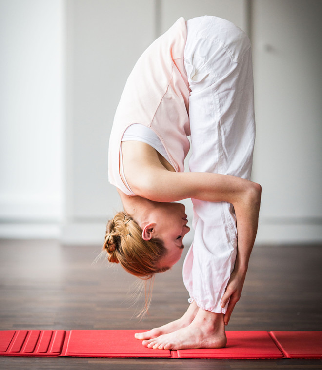
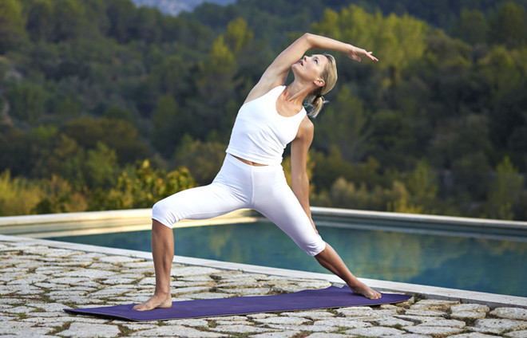

Наименование |
Фото |
Описание |
|||||||
|---|---|---|---|---|---|---|---|---|---|
| Хатха |  |
|
|||||||
| Аштанга-Виньяса |  |
|
|||||||
| Power Yoga |  |
|
|||||||
|
За последние 10 лет популярность йоги выросла в 4 раза.
Этому немало способствуют звездные поклонницы, в числе которых -
|
|||||||||